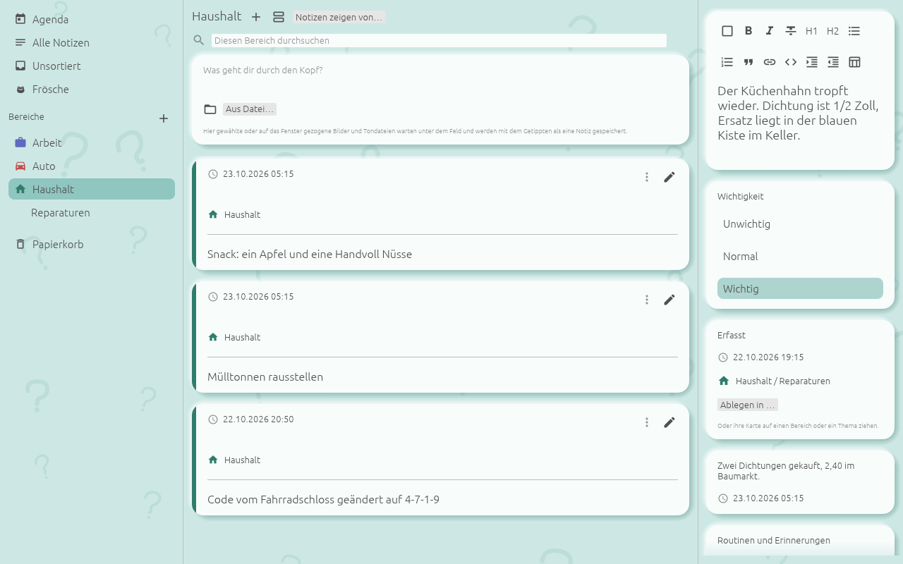
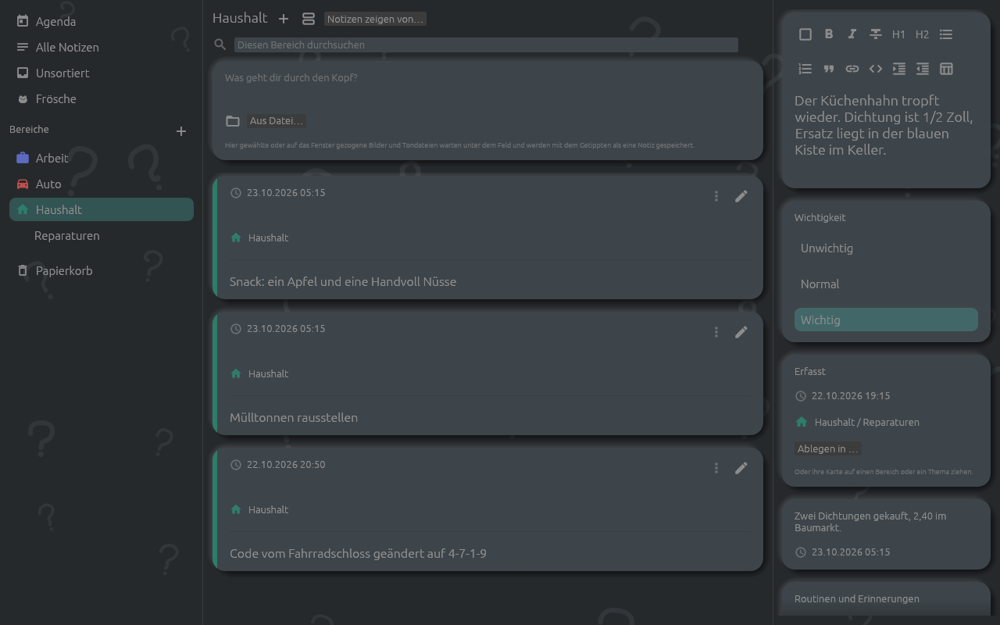
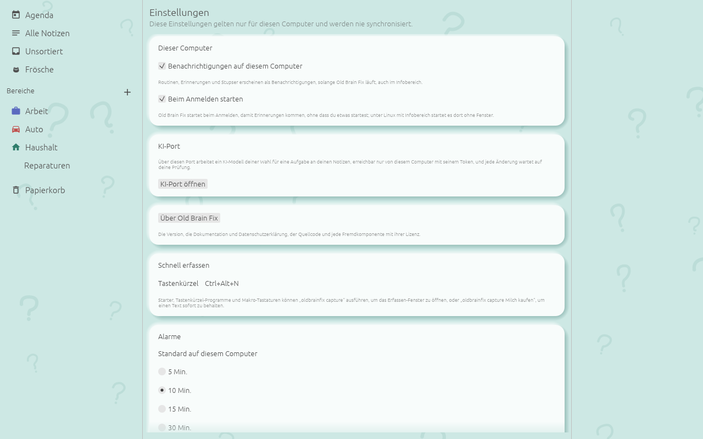
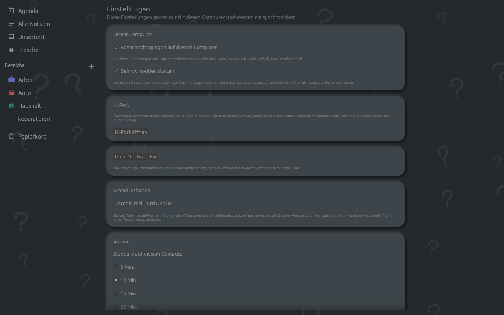

Die Desktop-App läuft unter Linux, Windows und macOS und hat dieselben Notizen, Bereiche und Routinen wie das Handy, sobald beide gekoppelt sind. Sie ist ein Fenster mit drei Spalten, bedient mit Maus und Tastatur, mit einem Erfassen-Fenster und einer Befehlszeile, um von überall zu erfassen. Die Einstellungen gehören zu diesem Computer und werden nie abgeglichen.
Die App wird mit Homebrew, Scoop, einem .deb, einer Flatpak-Datei, einem AppImage, einem Disk-Image oder einer Zip-Datei installiert; siehe Installieren. Unter Linux schreibt oder erneuert jeder Start außerhalb des Flatpaks den Eintrag der App im Anwendungsmenü und ihr Symbol.
Der erste Start bietet dieselben drei Wahlmöglichkeiten wie das Handy: Neu bei Old Brain Fix mit der Startauswahl, Ein Gerät von mir hinzufügen und Aus einer Sicherung wiederherstellen (siehe Erste Schritte). Das Profil übernimmt Namen und Bild deiner Anmeldung am Computer, sonst den Namen des Computers. Der Desktop fragt weder nach dem Sprachmodell noch nach dem Zugriff für Alarme.
Das Fenster hat drei Spalten; die Grenzen zwischen ihnen lassen sich ziehen.
In einer Liste von Notizen klappt ein Klick eine kompakte Karte auf; ein Doppelklick oder der Stift öffnet die Notiz im Editor. Ein Rechtsklick auf eine Karte oder ihr ⋮ öffnet Bearbeiten, die Einträge für Checkliste und Einkaufsliste (siehe Listen, Strichlisten, Einheiten und Frösche), An eine Person senden, Als Text kopieren und Als Markdown speichern …. Eine Karte, die auf einen Bereich oder ein Thema in der linken Spalte gezogen wird, wird dort abgelegt; Notizen im Papierkorb lassen sich nicht ziehen.
Die Leiste der Agenda enthält Alle Routinen und Erinnerungen, Neue Routine oder Erinnerung und das Profilbild. Das Profilbild führt zur Profilseite und von dort weiter zu den Einstellungen und zu Mit einem anderen Gerät synchronisieren.


Wo das Handy mit einer Wischgeste zurückgeht, nimmt der Desktop Tasten und die Seitentasten der Maus. Alt+Links und Alt+Rechts ruhen, solange der Cursor in einem Textfeld steht; die Maustasten wirken immer.
Unter Linux zeigt die App ein Symbol im Infobereich, wo die Arbeitsumgebung einen hat: KDE, Xfce, Cinnamon und GNOME mit der Erweiterung AppIndicator. Ein Klick auf das Symbol öffnet das Fenster; sein Menü enthält Old Brain Fix öffnen, Notiz erfassen und Beenden. Schließt du das Fenster, läuft die App im Infobereich weiter, mit ihren Benachrichtigungen, ihrem Tastenkürzel, dem Abgleich mit gekoppelten Geräten und der wöchentlichen Sicherung; Beenden beendet sie.
Windows und macOS haben kein Symbol im Infobereich, ebenso wenig Linux ohne Infobereich. Dort beendet das Schließen des Fensters die App, und mit ihr die Benachrichtigungen und das Tastenkürzel, bis sie wieder gestartet wird.
Einstellungen, „Dieser Computer“, Beim Anmelden starten ist an, solange es nicht abgeschaltet wird. Es schreibt unter Linux einen Autostart-Eintrag (im Flatpak über das Hintergrund-Portal der Arbeitsumgebung), unter macOS einen LaunchAgent und unter Windows einen Run-Eintrag für deinen Benutzer. Unter Linux mit Infobereich startet die App beim Anmelden ohne Fenster in den Infobereich; unter Windows, unter macOS und unter Linux ohne Infobereich öffnet sie das Fenster.
Die App läuft einmal pro Benutzer. Ein zweiter Start, aus dem Menü oder per Befehl, gibt seinen Wunsch an die laufende App weiter: Ihr Fenster öffnet sich, oder ihr Erfassen-Fenster.


Das Tastenkürzel, Strg+Alt+N, solange nicht geändert, öffnet das Fenster „Notiz erfassen“ über
allen anderen Fenstern, unter Linux auch während die App ohne ihr Fenster im Infobereich läuft.
Notiz erfassen im Infobereich und der Befehl oldbrainfix capture
öffnen es ebenfalls. Es nimmt Text, eine Sprachaufnahme und die Zwischenablage, bietet dieselbe
Aktionszeile wie das Erfassungsfeld und fragt nie etwas: Enter speichert die Notiz mit einem
Stupser in 1 Std., und Esc behält Getipptes genauso (siehe
Erfassen und
sortieren).
oldbrainfix öffnet das Fenster.oldbrainfix capture öffnet das Erfassen-Fenster.oldbrainfix capture Milch kaufen behält „Milch kaufen“ als unsortierte Notiz mit einem Stupser in 1 Std., ohne Fenster. Nach -- ist jedes Wort Text, auch eines, das mit „-“ beginnt.oldbrainfix capture - behält, was über die Standardeingabe kommt.oldbrainfix import DATEI importiert ein Bündel und gibt aus, was hereinkam.oldbrainfix open DATEI zeigt eine gesendete Notiz im Fenster, zum Annehmen oder Ablehnen.oldbrainfix --help gibt die Bedienung aus.Ein Erfassen oder ein Import geht über die laufende App, die den Stupser sofort plant; läuft keine, schreibt der Befehl die Notiz selbst, und der Stupser kommt, sobald die App läuft. Ein gelungenes Erfassen gibt nichts aus. Der Rückgabewert ist 0, wenn es geklappt hat, 1, wenn die Notiz nicht behalten oder das Bündel nicht importiert werden konnte, und 2 bei falschen Argumenten oder wenn nichts zu erfassen war. Starter, Tastenkürzel-Programme und Makro-Tastaturen können diese Befehle ausführen, auch wo die Arbeitsumgebung kein Tastenkürzel anbietet.
.obfsync), das auf das Fenster gezogen wird, wird importiert; eine gesendete Notiz (.oldbrain) wird zum Annehmen oder Ablehnen gezeigt.Die Alarme der Routinen und Erinnerungen, der Stupser, der Änderungs-Stupser und „Verpasst, während Old Brain Fix nicht lief“ kommen als Benachrichtigungen des Systems, solange die App läuft. Der Schalter „Benachrichtigungen auf diesem Computer“ in den Einstellungen schaltet sie ab. Ein Klick auf eine Benachrichtigung öffnet das Fenster: beim Stupser bei „Unsortiert“; beim Änderungs-Stupser einen Speichern-Dialog für jeden wartenden Menschen.
Die App spielt den Alarmton selbst ab, und ein eskalierter Alarm macht die Benachrichtigung dringend; einen Vollbild-Alarm gibt es nicht (siehe Routinen, Erinnerungen und die Agenda).
Transkripte brauchen das Sprachmodell, das unter Einstellungen, Sprachmodell gewählt und heruntergeladen oder aus einer eigenen Datei genommen wird, wie auf dem Handy. Aufnahmen ohne Transkript, auch solche vom Handy, die dort nicht transkribiert wurden, folgen, sobald es da ist. Fototexte brauchen keinen Download: Die Texterkennung ist Teil der App. Beides läuft auf diesem Computer, eine Aufnahme oder ein Foto nach dem anderen, solange die App läuft (siehe Formatierter Text, Transkripte und Fototexte).
Mit einem anderen Gerät synchronisieren auf der Profilseite öffnet „Synchronisieren“. Es zeigt den Code dieses Computers, als QR-Code und als Text mit seiner PIN, damit das Handy ihn scannt; nach einem Handy, das noch nicht gekoppelt ist, wird erst gefragt, Vertrauen oder Ablehnen. Einen Code, den das Handy zeigt, tippst oder fügst du unter Kopplungscode ein und trittst mit Mit diesem Code synchronisieren bei. Gekoppelte Geräte im selben Netz gleichen sich danach von selbst ab, solange die App läuft, unter Linux auch im Infobereich; der geteilte Ordner wird alle halbe Minute abgeglichen. Zum Koppeln, zum geteilten Ordner, zu Bündeln und Konflikten siehe Teilen und abgleichen.
Nur der Desktop hat den KI-Port. Einstellungen, KI-Port öffnen lässt ein KI-Modell deiner Wahl für eine Aufgabe an deinen Notizen arbeiten, erreichbar nur von diesem Computer mit seinem Token. Der Abgleich wartet, solange der Port offen ist und bis zur Prüfung. Fertig, prüfen schließt den Port und listet jede Änderung mit Vorher und Nachher auf, um sie als Ganzes anzunehmen oder abzulehnen (siehe Die KI-Aufgabe).